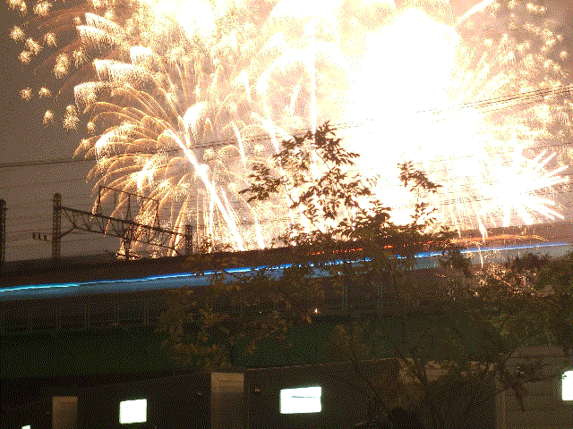

작자 : 슈의 라면가게
My every one weeks photo's
이 봉사기 웨브페이지는 나의 한주 마다 새로고쳐지는
여러 화질터진 256색 gif 사진!

동아일보 와 조선일보
학교를 가기 전에 용산역 스토리 웨이에서 신문을 세가지 종류를 산다 하나는 한겨레 두번째는 동아일보 세번째는 조선일보, 그 이유는 진보 중도 보수 여러 방향으로 소식을 들어 중립을 맞추기 위해서다. 사실 정치를 빼고 봐도 나라꼴이 정상은 아니다... 특히 9월에 통신사 3사가 다 털리고 10월엔 대전에 있는 국가 중요 서버가 배터리 화재로 불타고 11월엔 쿠팡 서버가 털리고 12월에는 업비트가 5조원 가치의 가상화폐가 털리는 등 여러 한국의 장점들과 단점들이 뒤섞인 전임 정부들의 재앙들이 일어나고 있다... 특히 2010년대때는 이룬것도 많았으나 지금 보면 저때 세워진 정보기술들이 지금까지 변화없이 사용되어 온것이 참으로 거지같다 단신에서는 중국 러시아 등지의 사이트 등에서 한국인들의 개인정보들이 4천원에 팔린다고 한다. (조선일보 12월 10일호 2면 발췌) , 참으로 단창하다. 앞으로 이러한 재앙들을 어떻게 이어나가야 할지에 대해 이번 이재명 정부에 대한 기대도 상당한데. 이재명 정부는 이번 6월 21대 대통령 선거에서 선거 공약으로 AI 발전 등을 말하였고 2047년까지 AI 개발 반도체 개발등을 위한 여러가지 계획들을 말하였기 때문이다.(25년 12월 11일 조선일보 동아일보 한겨레 발췌) 이번과 같은 보안구멍들은 이재명 정부의 계획들에 큰 흠집을 낼것이기에 이러한 구시대적이고 야만적인 한국의 안전불감증은 신속히 없어져야 할 따름이다. 조선일보는 사실 원래도 그랬지만 아직도 정상은 아니다 2025년 12월 11일 A35면에는 김 창균씨의 칼럼에서 이런글이 새겨졌다 "2시간 반짜리 윤석열의 비상계엄이 이리도 짧은데 비상계엄 그리고 내란이냐 이런거 가지고 이재명 정부가 1년을 물어뜯는데 이런건 잘 이해가 되지 않는다"라고 칼럼을 쓰셧던데 김 창균씨의 칼럼 그냥 까서 말하자면 ㅂㅅ같은 글이다 2시간 반도 내란이다 2시간 반에서 만약 더 길어져서 2달 반됫다면 조선일보에서 "윤석열의 내란은 치매걸린 민주당을 척결한 제왕!" 이런기사 쓰고있을거다.
2025.12.11 11:41


이메일: tppoints0@gmail.com